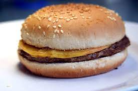

Cheeseburger

Description
The cheeseburger is the most American dish ever. It is indeed (with donuts)
the most portreied american food on Hollywood movies.
Easy to make, cheap and tasty.
What more do a food need to be this famous?
Ingredients
- Bread.
- Hamburger.
- Yellow cheese.
- Mustard, ketchup or mayonnaise.
Steps
- Heat the grill until it is very hot.
- Place the hamburgers over the grill.
- Cut open the bread.
- Add condiments to the bread.
- Turn the hamburguers over.
- Place the hamburger inside the bread.
- -Enjoy!